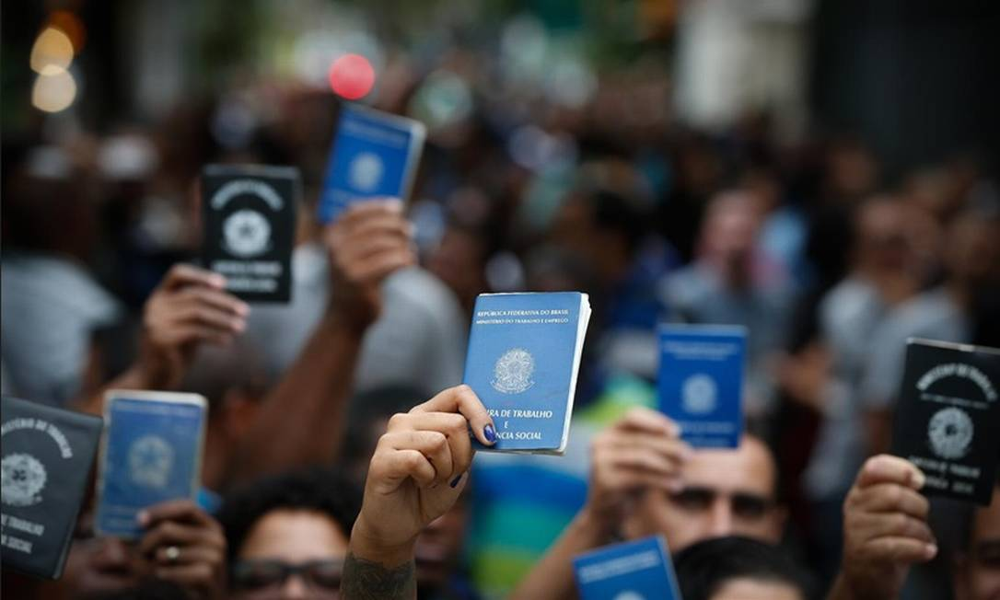

Em meio ao pulsar frenético das ruas e à arquitetura urbana, há um tecido invisível que une os sonhos de milhares: as oportunidades de emprego na cidade. Cada esquina, cada edifício, ressoa com a promessa de um futuro próspero e realizações pessoais. Na era contemporânea, as cidades se tornaram epicentros de inovação, criatividade e crescimento econômico, oferecendo uma miríade de oportunidades para aqueles que ousam explorá-las. As oportunidades de emprego na cidade são tão diversas quanto os próprios habitantes que as buscam. Desde os corredores corporativos das grandes empresas até os ateliês de arte escondidos em becos pitorescos, a cidade é um palco onde os talentos se encontram e se entrelaçam. Para o profissional em busca de desafios intelectuais, há os conglomerados de tecnologia e pesquisa, onde a inovação é o mantra e os limites são constantemente desafiados. Para o artista ávido por expressão, há galerias de arte efervescentes e estúdios de gravação, onde a criatividade é livre para dançar em suas formas mais exuberantes. Além das oportunidades convencionais, a cidade também é um terreno fértil para os empreendedores visionários. Das cafeterias aconchegantes aos food trucks itinerantes, das startups revolucionárias aos negócios familiares tradicionais, a cidade oferece espaço e público para aqueles com ideias inovadoras e um espírito empreendedor resiliente. No entanto, por trás do brilho das luzes da cidade, também residem desafios e obstáculos. A competição pode ser acirrada, os custos de vida podem ser altos e o ritmo frenético da vida urbana pode ser esmagador para alguns. No entanto, para aqueles dispostos a enfrentar esses desafios de frente, as oportunidades de emprego na cidade podem ser portais para uma vida repleta de significado, crescimento pessoal e sucesso profissional. Em última análise, as oportunidades de emprego na cidade são mais do que simplesmente fontes de renda; são convites para explorar novos horizontes, descobrir novas paixões e contribuir para o tecido vibrante e multifacetado da vida urbana. Para aqueles que ousam seguir adiante, a cidade está repleta de promessas e possibilidades esperando para serem desvendadas.
